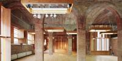
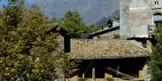
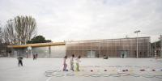
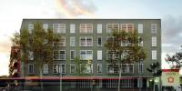
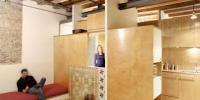
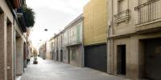
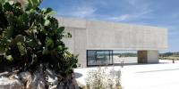

Obres seleccionades
|  |
Centre d'Art Cal Massó (PROPOSTES/QUÈ?)

|
 |
Cine Lídia Com habitar aquest antic cinema estant-hi a gust (poder relaxar-se a casa, no encostipar-se a l’hivern, rebre una bona dosi de llum solar...) i gastant-se els mínims diners, tant en l’obra com en el manteniment? |
|  |
Capsa habitable Exemple de reutilització del patrimoni construït. En aquest cas es tracta de fer una intervenció reversible que dignifiqui i actualitzi un edifici obsolet per la pèrdua de la societat autosuficient agro-ramadera al Pirineu. |
 |
Casa passiva Arboretum L’edifici és un habitatge entre mitgeres, que vol reduir el consum de recursos naturals. Minimitza el consum d’energia per al confort climàtic amb un bon aïllament i una disposició de les obertures amb un pati interior que maximitza la captació solar passiva durant l’hivern i proteccions... |
|  |
Gimnàs 704 L’ajuntament de Barbera del Vallès ens va encarregar el disseny d’un gimnàs amb vestidors i una pista poliesportiva exterior per al centre d’educació infantil “El Bosc” situat en un polígon industrial de la ciutat. Varem partir dels següents supòsits: |
 |
Casa 205 Es tracta d’un solar amb molt de pendent i amb una alta presència d’arbrat i sotabosc. El projecte pretén edificar una casa sense malmetre les característiques pròpies del solar. La casa anirà situada sobre una gran plataforma de roca existent. Aquesta plataforma també s’utilitzarà com a sortida... |
 |
Casa en Bunyola Trobar-se en un lloc on només el saber fer popular sap construir retorna l'arquitecte a l'aprenentatge. El fet que només arribi fins al solar un animal de càrrega o un home a peu mai ha estat un inconvenient; aquesta construcció busca allò senzill, tant pel que fa als materials, els que es... |
 |
Estudi del pintor Damià Jaume El projecte neix de la decisió de fer un aljub per a recollir l'aigua de la coberta de l'habitatge, i aquesta circumstància s'aprofita per construir el nou taller. Si el vell estudi estava situat en un primer pis amb vista al camp de Mallorca, ara l'estudi mira la terra més propera. Acull,... |
|  |
HPO Sant Andreu La nostra aproximació al projecte va ser començar des de dins cap enfora, prestant especial atenció a les qualitats espacials i les adjacències de l’interior. Entenem els llocs de transició entre interior i exterior com a límits gruixuts. Aquests límits estan compostos per intersticis amortidors... |
 |
Hotel Aire Situat a un camp de blat situat per un paisatge àrid amb collita de regadiu, exposat a forts i constants vents, l’hotel es va concebre com a seqüència d’interiors protegits des dels quals poder contemplar l’exterior. |
 |
Escola Bressol Ens demanen construïr una escola bressol ampliant la planta baixa d’un mas existent. A la planta primera s’hi vol, a més, una sala polivalent amb un accés independent. |
|  |
Reforma habitatge Passatge Batlló Van trobar un pis petit a la planta primera d’un passatge tranquil. Un interior plè de subdivisions, un gran pati, i rastres evidents de 100 anys d’ocupació. |
|  |
Casa Sant Feliu Casa unifamiliar entre mitgeres de PB+ P1 i altell, amb un ample de 4,27m i una profunditat edificable de 21.40m. Com la façana principal està orientada a sud i el pati posterior a nord, l’habitatge s’organitza centralitzant la zona de dia a la primera planta introduint un pati-terrassa ventilat... |
|  | Museu es Molinar |
 |
Restaurant can Jeroni La reforma del restaurant Can Jeroni s’ha enfocat des de la perspectiva d’un procés marcat per vàries fases que responen a un negoci en constant transformació.
En una primera intervenció s’adequa una sala annexa a l’estructura existent del local. El nou menjador es... |
 |
Parc del turò del sastre Una de las estratègies importants del projecte és garantir l’accessibilitat a tots els punts del parc, fins i tot, possibilitar l’accés al punt més alt del turó. |
 |
Cases Pati El projecte per a 13 habitatges pati en filera a Celrà pretén buscar alternatives a les tipologies que conformen l’actualment mal anomenada “ciutat - jardí”: barris dominats |
 |
Casa Collage Casa Collage al Call de Girona Rehabilitar implica sempre establir una determinada relació amb el passat, amb els passats que s’acumulen a l’espai de la intervenció. I també amb el futur, aquella idea imaginada de lloc cap a la que voldríem tendir. Però implica, sobretot, una gran... |
 |
Can Joan Jaume i n'Apolonia Quan un passeja per aquest barri se’n adona de la opacitat que presenten les cases aquí construïdes. Són construccions muràries, pètrees, dures, opaques, tancades al carrer. Murs rugosos, esquitxats d’obertures minúscules. Murs quasibé infranquejables. D’aquesta primera lectura se’n desprèn la... |
 |
El pis d'en Quim Aquesta reforma intervé a la crugia sud d’una casa després que la façana principal abocada a un jardí es convertís en mitgera. Per tant calia millorar-ne l’organització i reorientar l’entrada de llum natural. La nova distribució permet que la sala que dóna al carrer absorbeixi les... |